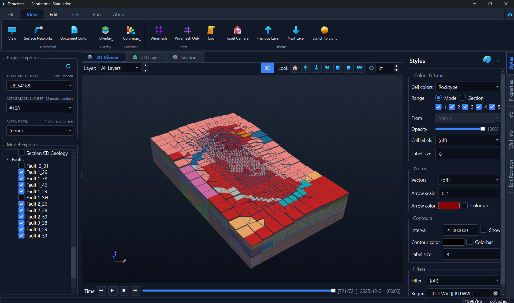
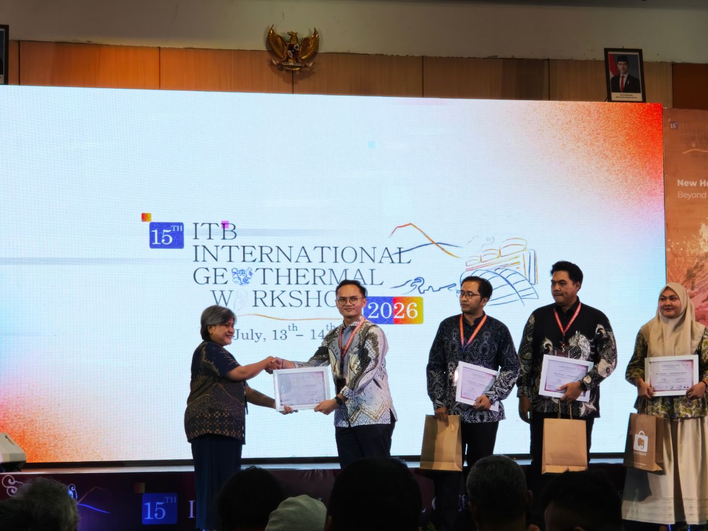
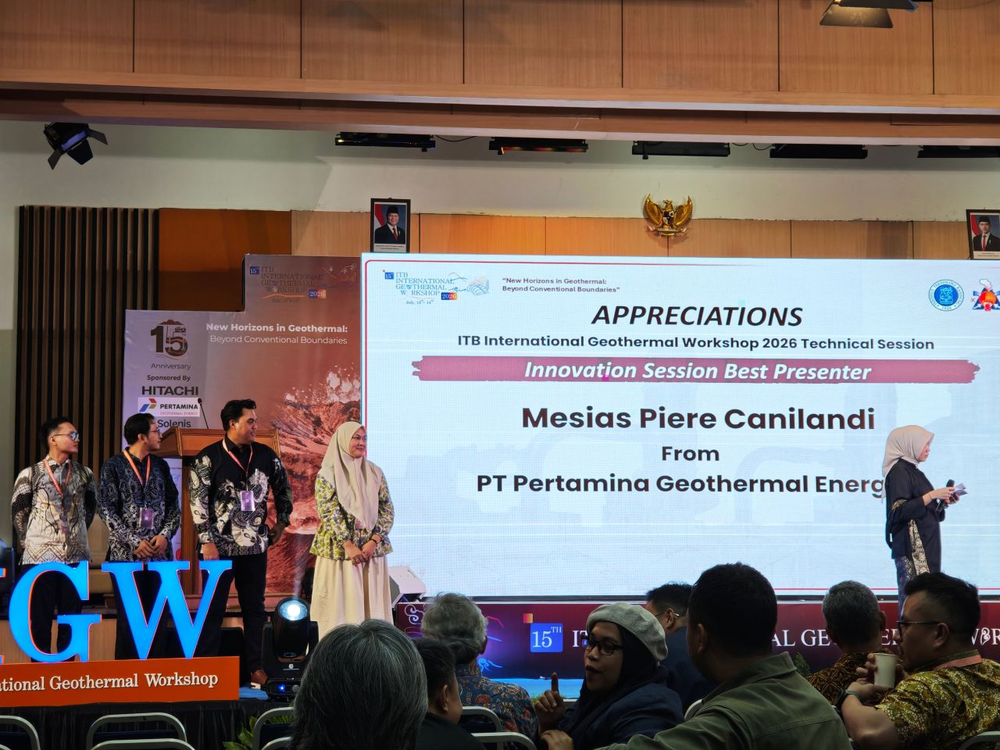
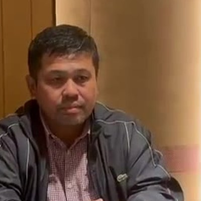

Visualize it three ways
Build and inspect the same model in synchronized 3D, 2D layer, and cross-section views. Draw a section line and watch it follow the real terrain — not a flattened grid.
Integrated geothermal simulation platform
Teracores connects geological modeling with dynamic geothermal simulation. Import your static model, build the simulation model, run it on Waiwera or TOUGH2, calibrate the results in 3D, and export the results back to your geological workflow — all within one integrated environment.
The modeling gap
Geological models and numerical simulators often use different data structures and workflows. Moving between them can require manual conversion, repetitive input preparation, and disconnected interpretation — slowing the path from model to engineering decision.
The Teracores way
What you get
Teracores provides one visual workspace for the geothermal simulation workflow — connecting geological models, reservoir simulation, wellbore modeling, calibration, and results interpretation.
Build and inspect the same model in synchronized 3D, 2D layer, and cross-section views. Draw a section line and watch it follow the real terrain — not a flattened grid.
Start from the geology you already have and turn it into a simulation-ready reservoir grid. Teracores is agnostic — it works alongside multiple static-modeling packages, not just one.
Prepare inputs and launch a full run on Waiwera or TOUGH2 from the GUI, with a live monitor for convergence. No hand-edited JSON, no TOUGH2 mesh files, no command line.
The name says it: iterative reservoir-coupled wellbore simulation. An integrated wellbore model iterates with the reservoir so wellhead conditions and reservoir response stay physically consistent.
Scrub one time slider and watch temperature, pressure and saturation evolve across all three views at once. Overlay real downhole survey points to history-match against the field.
Close the loop: export grids and results straight to Petrel, Leapfrog and Eclipse-family tools (GRDECL), or to TOUGH2 listing for PyTOUGH — so the model goes back where your team works.
A look inside
Explore the model and simulation results visually. Inspect, compare, and communicate complex reservoir behavior without relying on tables of numbers alone.

Orbit the full mesh, drop to a single layer, or slice a section — all from the same model.
Shade cells by rock type, boundaries, initial conditions, or any simulation field.
One time slider drives every view — from natural state to the final forecast step.
Integrated workflow
Teracores brings geological modeling, dynamic simulation, calibration, and interpretation into one consistent visual workflow — reducing unnecessary handoffs between tools.
Import your geological model and build the simulation-ready reservoir grid, including mesh, rock types, boundaries, sources, and wells.
Prepare simulation inputs visually and launch runs on Waiwera or TOUGH2, including the coupled wellbore model, while monitoring simulation progress.
Visualize simulation results, compare them with field data, and export grids and results back to the geological workflow to support the next engineering decision.
Geological Model → Dynamic Simulation → Interpretation · Petrel · Leapfrog · Waiwera · TOUGH2 · PyTOUGH
Coupled wellbore model
A geothermal well and the reservoir it taps are one system: feed-zone pressure drives the flow, the flow sets how pressure and temperature fall up the wellbore, and that drawdown feeds straight back into the reservoir. Teracores models both at once — an integrated wellbore model iterates with the reservoir simulation until the wellhead conditions and the reservoir response agree.
The model
A real faulted geothermal reservoir, built and explored in Teracores.
Full project lifecycle
Teracores organizes each model into phases, so the same reservoir carries you from first look to long-term forecast.
Characterize the reservoir before development — temperature, pressure and geology as they are today.
Match production history against real well data to make the model trustworthy.
Forecast decades ahead: compare drilling plans, injection strategies and field life side by side.
Recognition & Industry Validation
“TERACORES: An Integrated Geothermal Numerical Simulation Platform for Pre- and Post-Processing of Reservoir–Wellbore Models”
Mesias Canilandi · Muhamad Bayu Saputra · Eric Firanda
Developed at PT Pertamina Geothermal Energy (PGE) and presented at a leading forum connecting geothermal academics and practitioners.


Testimonials
Senior exploration and exploitation leaders at PT Pertamina Geothermal Energy on what Teracores brings to everyday reservoir work.
“Aplikasi TERACORES sangat bagus dan bermanfaat, memiliki fleksibilitas tinggi dengan mengakomodir berbagai jenis engine simulasi reservoir, menu interface yang sangat lengkap, serta mengintegrasikan numerical simulation dengan wellbore modeling sehingga pekerjaan simulasi menjadi lebih cepat dan mudah.”
EN“TERACORES is an excellent and genuinely useful application. It is highly flexible, accommodating a range of reservoir simulation engines, with a very complete interface — and it integrates numerical simulation with wellbore modeling, so simulation work becomes faster and easier.”

Edwil Suzandi Director of Exploration & Development · PGETell us about your modeling challenge and explore how Teracores can fit into your geothermal simulation workflow.
Developed and supported by the Teracores team at PT Pertamina Geothermal Energy.